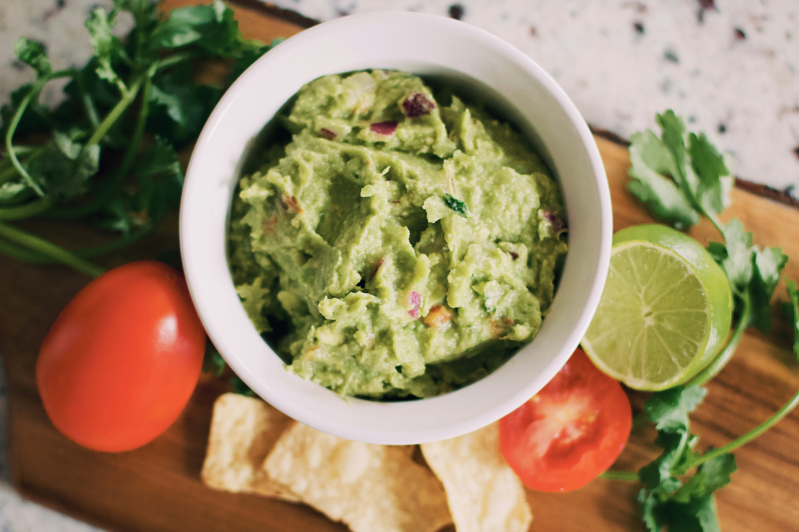

Guacamole recipe

This guacamole recipe gets a tasty kick from cayenne and cilantro. You can serve it smooth or chunky depending on your tastes. Serve with homemade tortilla chips.
Guacamole's ingredients
- 3 avocados -peeld, pitted, and mashed
- 1 lime, juiced
- 1 teaspoon salt
- 2 roma (plum) tomatoes, diced
- 1/2 cup diced onion
- 3 tablespoons chopped fresh cilantro
- 1 teaspoon minced garlic
- 1 pinch ground cayenne pepper
Directions
- Step 1: Mash avocados, lime juice, and salt together in a medium bowl. Mix in tomatoes, onion, cilantro, and garlic. Stir cayenne pepper
- Step 2: Serve immediately, or cover and refrigerate for 1 hours for improved flavor
Enjoy!